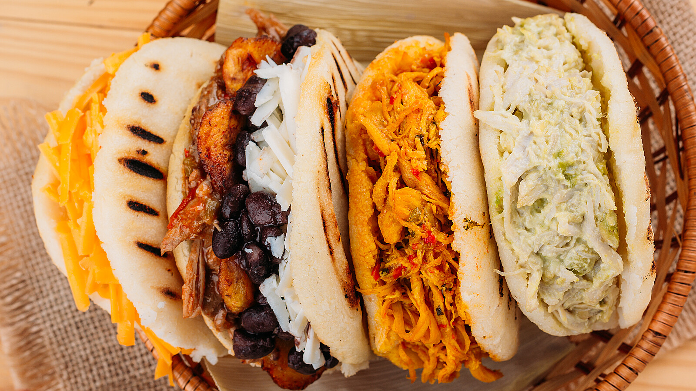

Arepas Recipe

Venezuelan arepas
Venezuelan arepas are like delicious cornmeal sandwiches.
They're round, thick, and made from cornflour. You can stuff them with
all sorts of tasty fillings like cheese, meat, avocado, or beans.
Ingredients
- cornflour
- Water
- salt
- fillings
- Butter
Steps
- Get your hands on some corn flour, water, and salt.
- Mix the corn flour and salt in a bowl, and slowly add water
while stirring until you have a smooth dough.
- Take a handful of the dough and shape it into a ball, then flatten it to form a thick patty.
- Heat up a non-stick pan or griddle over medium heat.
- Place the arepa patties on the hot pan and let them cook for a few minutes on each side
until they develop a golden-brown crust.
- Once cooked, transfer the arepas to an oven or toaster oven and let them bake for about
10 minutes to ensure they're cooked through.
- Remove the arepas from the oven and let them cool slightly before slicing them open.
- Fill the arepas with your favorite fillings like cheese, meat, beans, or avocado.
- Enjoy your homemade arepas with a side of hot sauce or salsa.